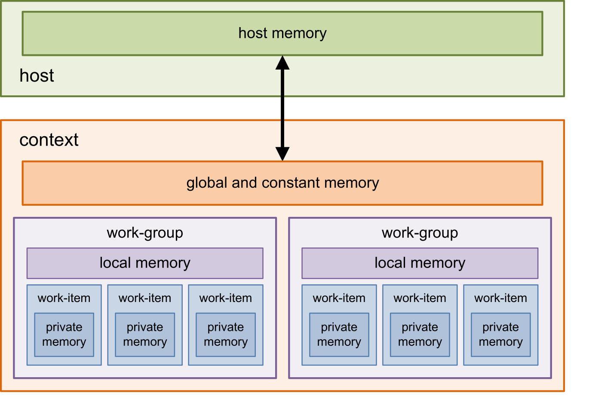

The Models in OpenCL
To use OpenCL, we must understand how OpenCL abstracts the real world devices so that we can program with it.
Disambiguation
The OpenCL standard had a bad choice of words that overlaps other things. For example, they have an abstracted device, but we also talk about real world devices. But device itself already has many meaning in English, and we can refer device to both a graphic card or a full computer. So we need to disambiguate.
- Anything we talk about in the future content that can both mean a physical thing and an abstracted thing, unless I add physical before it, I will always mean an abstracted thing on the software side. For example, if I say memory, I mean the memory abstracted by the OpenCL. If I say physical memory, I mean the actually physical memory on the GPU.
- Physical device will be exclusively used for GPU. A complete Computer will not be referred to as a physical device. Computer doesn't need physical prefix because we don't abstract the whole computer.
- CPU in OpenCL emulates a GPU, so we only focus on GPU architecture. Other type of devices usually have a similar architecture to GPU.
Platform and Device
OpenCL defines a type of physical devices as a platform, for example, Nvidia GPU, Intel CPU. For a computer with a Xeon CPU and a Nvidia GPU, we have two platforms, one for the Intel CPU and one for the Nvidia GPU.
Physical devices will be mapped to devices based on how the manufacturer defines them. Typically, each physical device will be mapped to a single device.
For example, a computer with a Xeon CPU and a Nvidia GPU will have two devices, one for the Intel CPU and one for the Nvidia GPU. However, if there are two Nvidia GPUs, they will usually be mapped to two devices.
A device can have many context. You can imagine it as something like a logic device, while the real device execute one of the context based on the schedule. A context and a device has identical components, and thus they are confused below for convenience. Usually, in actual programming, the device is solely used for creating a context, then never used again.
The Three Major Models
The most important part of the OpenCL is how it abstracts physical devices. OpenCL maps heterogeneous devices to same abstracted devices, thus offering a unified programming model.
There are three models that are the most important in OpenCL:
- The Device Model: defines how the device interacts with the host computer.
- The Memory Model: defines how the memory is managed by the device.
- The Execution Model: defines how the program is executed on the device.
Each model contains copious amount of details. We will introduce the most important ones. However, during this whole series, we will add more and more details to these models.
The Device Model
The Device Model defines how the device interacts with the host computer. Please note that host computer is a real-world computer, while the device here is an abstracted one.
A device (or context) will hold a command queue, which is a, well, queue that accommodates all the commands. The host computer can submit commands to the device.
We usually write OpenCL C (a variant of C) programs on the host computer, then dynamically compile them to the assembly of the target device, which will be sent to the command queue. As execution finishes, the result will be written back to the host computer.
The Execution Model
After the command is sent to the device, it will be executed on the device. The execution model defines how the program is executed on the device.
When it comes to parallel programming, we execute the same task many times at the same time. We can tell the device what task it should execute and how many times.
We use a three-dimensional tuple to tell the device how many times it should execute the task , which is times. The reason why we use a tuple instead of a single number will be presented later. Now you need to know that, when we want a device to finish a task, we will distribute a task and a tuple. We call the task a kernel and the tuple a NDRange (N-Dimension range, very bad name).
Now you need to know that, instead of a monolithic ALU, cache, other components like CPU, a physical parallel device (usually GPU) has many small cores (aka processing element, PE). Each PE will be abstracted into a work item.
The PE are grouped. Within each group, we can share some memory (the local memory, later in the memory model), and we can do synchronization. Each physical group is called a compute unit (CU), and each CU is abstracted into a work group.
Kind of confusing, now let's do a pair.
- A ND Range of tasks will be sent to a physical device.
- A Work Group of tasks will be sent to a compute unit.
- A Work Item of tasks will be sent to a processing element.
The number of them typically don't match, and thus a PE may execute more than one work items.
The ND Range will be splitted into multiple work groups that are usually of the same size as CU (You can add empty task for padding if it doesn't divide). Then, each CU will claim a work group. If there are remaining ones, CU that finishes will claim what's left.
Work group size is also a tuple, for example, , which means that each work group will have work items. If we need to execute a ND Range of , we would have work groups. If your device has more than CUs, it will be executed in one go. If not, then it will be executed in batches. A workgroup will always have a continuous chunk that is not breakable.
The Memory Model
A classical demonstration is as folllows,

The picture is originally from this link, by Björn König.
{kind=link}
There are five types of memory.
- The host memory, which is the memory on the host computer. Usually just the RAM.
- The global memory of the device. Which is a big chunk of memory that is shared between all the PE. They are big, but slow. It can be accessed by the host.
- The global constant memory of the device. Which, is global memory, but constant and faster, yet readonly to PE. Can be accessed by the host.
- The local memory of each work group. It is a small chunk of memory that is only accessible by the PE in the same work group. They are smaller than the global memory, but faster.
- The private memory of each work item. It is a small chunk of memory that is only accessible by the PE in the same work item. They are the smallest, but fastest.
There are many other details such as memory bank, but we will cover them later. Now you just need to know the five types of memory.
Please note that we are, again, talking about the abstracted OpenCL device. In reality, take Nvidia GPU as an example, although we say that private memory is held by each work item, a GPU has a monolithic private memory bank that is distributed to each work item. This is also true for the local memory.